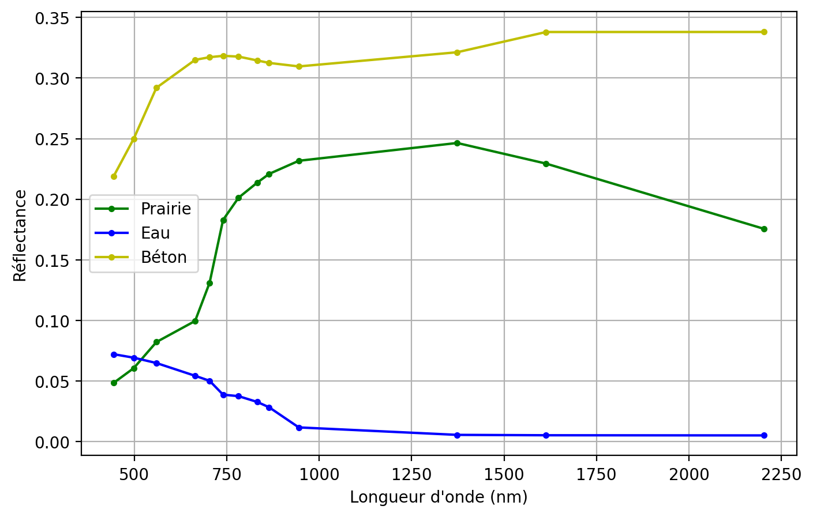
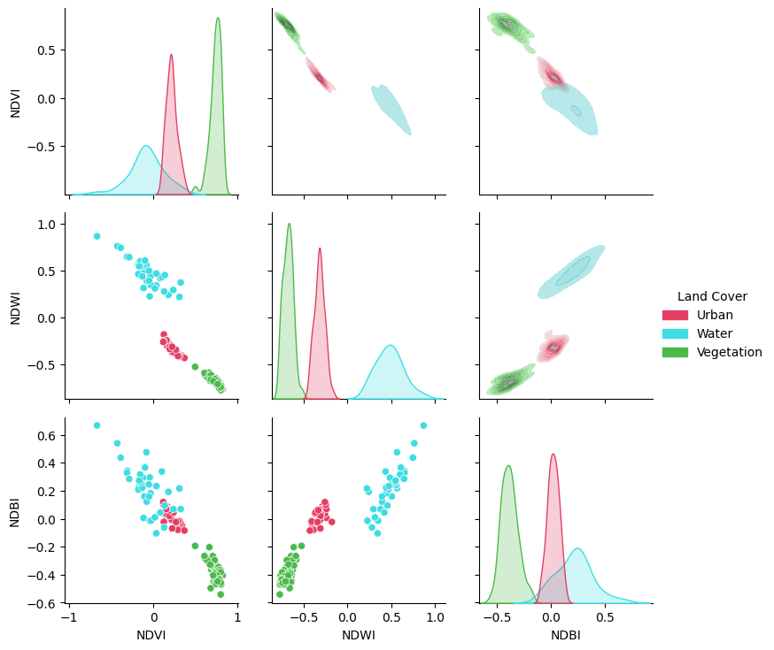

%%capture
!pip install -qU matplotlib rioxarray xrscipy scikit-image pyarrow spyndex4 Transformations spectrales
4.1 Préambule
Assurez-vous de lire ce préambule avant d’exécuter le reste du notebook.
4.1.1 Objectifs
Dans ce chapitre, nous abordons l’exploitation de la dimension spectrale des images satellites. Ce chapitre est aussi disponible sous la forme d’un notebook Python:

Objectifs d’apprentissage visés dans ce chapitre
À la fin de ce chapitre, vous devriez être en mesure de :
- comprendre le principe des indices spectraux;
- calculer différents indices avec spyndex;
- analyser le gain en information des indices;
4.1.2 Librairies
Les librairies qui vont être explorées dans ce chapitre sont les suivantes:
Dans l’environnement Google Colab, seul rioxarray doit être installés
Vérifiez les importations:
import numpy as np
import rioxarray as rxr
from scipy import signal
import xarray as xr
import xrscipy
import matplotlib.pyplot as plt
import spyndex
import rasterio as rio4.1.3 Images utilisées
Nous utilisons les images suivantes dans ce chapitre:
%%capture
import gdown
gdown.download('https://drive.google.com/uc?export=download&confirm=pbef&id=1a6Ypg0g1Oy4AJt9XWKWfnR12NW1XhNg_', output= 'RGBNIR_of_S2A.tif')
gdown.download('https://drive.google.com/uc?export=download&confirm=pbef&id=1a6O3L_abOfU7h94K22At8qtBuLMGErwo', output= 'sentinel2.tif')
gdown.download('https://drive.google.com/uc?export=download&confirm=pbef&id=1_zwCLN-x7XJcNHJCH6Z8upEdUXtVtvs1', output= 'berkeley.jpg')
gdown.download('https://drive.google.com/uc?export=download&confirm=pbef&id=1dM6IVqjba6GHwTLmI7CpX8GP2z5txUq6', output= 'SAR.tif')
gdown.download('https://drive.google.com/uc?export=download&confirm=pbef&id=1aAq7crc_LoaLC3kG3HkQ6Fv5JfG0mswg', output= 'carte.tif')
gdown.download('https://drive.google.com/uc?export=download&confirm=pbef&id=1iCZNYTv0qEZRzPhe22nPdpV4Ks7NsY3b', output= 'ASCIIdata_splib07b_rsSentinel2.zip')
!unzip -q ASCIIdata_splib07b_rsSentinel2.zipVérifiez que vous êtes capable de les lire :
with rxr.open_rasterio('berkeley.jpg', mask_and_scale= True) as img_rgb:
print(img_rgb)
with rxr.open_rasterio('RGBNIR_of_S2A.tif', mask_and_scale= True) as img_rgbnir:
print(img_rgbnir)
with rxr.open_rasterio('sentinel2.tif', mask_and_scale= True) as img_s2:
print(img_s2)
with rxr.open_rasterio('carte.tif', mask_and_scale= True) as img_carte:
print(img_carte)4.2 Qu’est ce que l’information spectrale?
L’information spectrale touche à l’exploitation de la dimension spectrale des images (c.à.d le long des bandes spectrales de l’image). La taille de cette dimension spectrale dépend du type de capteurs considéré. Un capteur à très haute résolution spectrale par exemple aura très peu de bandes (4 ou 5). Un capteur multispectral pourra contenir une quinzaine de bande. À l’autre extrême, on trouvera les capteurs hyperspectraux qui peuvent contenir des centaines de bandes spectrales.

Pour une surface donnée, la forme des valeurs le long de l’axe spectrale caractérise le type de matériau observé ainsi que son état. On parle souvent alors de signature spectrale. On peut voir celle-ci comme une généralisation de la couleur d’un matériau au delà des bandes visibles du spectre. L’exploitation de ces signatures spectrales est probablement un des principes les plus importants en télédétection qui le distingue de la vison par ordinateur. L’USGS maintient une base de données spectrales acquises en laboratoire (Kokaly et Klein 2017). On peut observer sur la figure ci-dessous comment la forme et l’amplitude de trois signatures différentes peut changer en fonction du type de surface.
Text(0, 0.5, 'Réflectance')Exemples de signatures spectrales pour trois surfaces différentes pour les bandes spectrales de Sentinel-2

4.3 Indices spectraux
Il existe une vaste littérature sur les indices spectraux, le choix d’un indice plutôt qu’un autre dépend fortement de l’application visée, nous allons simplement couvrir les principes de base ici. Le principe d’un indice spectral consiste à mettre en valeur certaines caractéristiques saillantes du spectre comme des pentes, des gradients, etc.
La librairie Python Awesome Spectral Indices maintient une liste de plus de 200 indices spectraux (radar et optiques). La liste complète est affichable avec la commande suivante:
spyndex.indicesSpectralIndices(['AFRI1600', 'AFRI2100', 'ANDWI', 'ARI', 'ARI2', 'ARVI', 'ATSAVI', 'AVI', 'AWEInsh', 'AWEIsh', 'BAI', 'BAIM', 'BAIS2', 'BCC', 'BI', 'BITM', 'BIXS', 'BLFEI', 'BNDVI', 'BRBA', 'BWDRVI', 'BaI', 'CCI', 'CIG', 'CIRE', 'CRI550', 'CRI700', 'CSI', 'CSIT', 'CVI', 'DBI', 'DBSI', 'DPDD', 'DSI', 'DSWI1', 'DSWI2', 'DSWI3', 'DSWI4', 'DSWI5', 'DVI', 'DVIplus', 'DpRVIHH', 'DpRVIVV', 'EBBI', 'EBI', 'EMBI', 'ENDVI', 'EVI', 'EVI2', 'EVIv', 'ExG', 'ExGR', 'ExR', 'FAI', 'FCVI', 'GARI', 'GBNDVI', 'GCC', 'GDVI', 'GEMI', 'GLI', 'GM1', 'GM2', 'GNDVI', 'GOSAVI', 'GRNDVI', 'GRVI', 'GSAVI', 'GVMI', 'IAVI', 'IBI', 'IKAW', 'IPVI', 'IRECI', 'LSWI', 'MBI', 'MBWI', 'MCARI', 'MCARI1', 'MCARI2', 'MCARI705', 'MCARIOSAVI', 'MCARIOSAVI705', 'MGRVI', 'MIRBI', 'MLSWI26', 'MLSWI27', 'MNDVI', 'MNDWI', 'MNLI', 'MRBVI', 'MSAVI', 'MSI', 'MSR', 'MSR705', 'MTCI', 'MTVI1', 'MTVI2', 'MuWIR', 'NBAI', 'NBLI', 'NBLIOLI', 'NBR', 'NBR2', 'NBRSWIR', 'NBRT1', 'NBRT2', 'NBRT3', 'NBRplus', 'NBSIMS', 'NBUI', 'ND705', 'NDBI', 'NDBaI', 'NDCI', 'NDDI', 'NDGI', 'NDGlaI', 'NDII', 'NDISIb', 'NDISIg', 'NDISImndwi', 'NDISIndwi', 'NDISIr', 'NDMI', 'NDPI', 'NDPolI', 'NDPonI', 'NDREI', 'NDSI', 'NDSII', 'NDSIWV', 'NDSInw', 'NDSWIR', 'NDSaII', 'NDSoI', 'NDTI', 'NDVI', 'NDVI705', 'NDVIMNDWI', 'NDVIT', 'NDWI', 'NDWIns', 'NDYI', 'NGRDI', 'NHFD', 'NIRv', 'NIRvH2', 'NIRvP', 'NLI', 'NMDI', 'NRFIg', 'NRFIr', 'NSDS', 'NSDSI1', 'NSDSI2', 'NSDSI3', 'NSTv1', 'NSTv2', 'NWI', 'NormG', 'NormNIR', 'NormR', 'OCVI', 'OSAVI', 'OSI', 'PI', 'PISI', 'PSRI', 'QpRVI', 'RCC', 'RDVI', 'REDSI', 'RENDVI', 'RFDI', 'RGBVI', 'RGRI', 'RI', 'RI4XS', 'RNDVI', 'RVI', 'S2REP', 'S2WI', 'S3', 'SARVI', 'SAVI', 'SAVI2', 'SAVIT', 'SEVI', 'SI', 'SIPI', 'SLAVI', 'SR', 'SR2', 'SR3', 'SR555', 'SR705', 'SWI', 'SWM', 'SeLI', 'TCARI', 'TCARIOSAVI', 'TCARIOSAVI705', 'TCI', 'TDVI', 'TGI', 'TRRVI', 'TSAVI', 'TTVI', 'TVI', 'TWI', 'TriVI', 'UI', 'VARI', 'VARI700', 'VDDPI', 'VHVVD', 'VHVVP', 'VHVVR', 'VI6T', 'VI700', 'VIBI', 'VIG', 'VVVHD', 'VVVHR', 'VVVHS', 'VgNIRBI', 'VrNIRBI', 'WDRVI', 'WDVI', 'WI1', 'WI2', 'WI2015', 'WRI', 'bNIRv', 'kEVI', 'kIPVI', 'kNDVI', 'kRVI', 'kVARI', 'mND705', 'mSR705', 'sNIRvLSWI', 'sNIRvNDPI', 'sNIRvNDVILSWIP', 'sNIRvNDVILSWIS', 'sNIRvSWIR'])Le détail d’un indice particulier, par exemple le `NDVI`, est aussi affichable:
spyndex.indices["NDVI"]SpectralIndex(NDVI: Normalized Difference Vegetation Index)
* Application Domain: vegetation
* Bands/Parameters: ['N', 'R']
* Formula: (N-R)/(N+R)
* Reference: https://ntrs.nasa.gov/citations/19740022614
spyndex pré-suppose une nomenclature prédéfinie des bandes, on peut voir la correspondance sur le tableau ci-dessous:
spyndex.bandsBands(['A', 'B', 'G', 'G1', 'N', 'N2', 'R', 'RE1', 'RE2', 'RE3', 'S1', 'S2', 'T', 'T1', 'T2', 'WV', 'Y'])| Index | Noms | Spyndex | Noms |
|---|---|---|---|
| 1 | B01 | A | Aérosol |
| 2 | B02 | B | Bleu |
| 3 | B03 | G | Vert |
| 4 | B04 | R | Rouge |
| 5 | B05 | RE1 | Red edge 1 |
| 6 | B06 | RE1 | Red edge 2 |
| 7 | B07 | RE2 | Red edge 3 |
| 8 | B08 | N | Proche-infrarouge 1 |
| 9 | B08A | N2 | Proche-infrarouge 2 |
| 10 | B09 | - | Vapeur d’eau |
| 11 | B11 | S1 | Infra-rouge onde courte 1 |
| 12 | B12 | S2 | Infra-rouge onde courte 1 |
Deux options sont possibles, on peut soit renommer les noms des bandes avec xarray ou “mapper” les noms vers les noms appropriés. Regardons les dimensions de notre jeux de données:
img_s2.dims('band', 'y', 'x')On peut simplement changer les index (coords) de la dimension band:
img_s2 = img_s2.sel(band = list(range(1,13))).assign_coords({'band':["A", "B", "G", "R", "RE1", "RE2", "RE3", "N", "N2", "WV", "S1", "S2"]})
img_s2=img_s2/10000 # normalisation en réflectancefrom rasterio import plot
idx = spyndex.computeIndex(
index = ["NDVI","GNDVI","SAVI"],
params = {
"N": img_s2.sel(band = "N"),
"R": img_s2.sel(band = "R"),
"G": img_s2.sel(band = "G"),
"L": 0.5
}
)
# Plot the indices (and the RGB image for comparison)
fig, ax = plt.subplots(2,2,figsize = (9,9))
[a.axis('off') for a in ax.flatten()]
plot.show(img_s2.sel(band = ["R","G","B"]).data / 0.3,ax = ax[0,0],title = "RGB")
plot.show(idx.sel(index = "NDVI"),ax = ax[0,1],title = "NDVI")
plot.show(idx.sel(index = "GNDVI"),ax = ax[1,0],title = "GNDVI")
plot.show(idx.sel(index = "SAVI"),ax = ax[1,1],title = "SAVI")
On peut vérifier l’utilité des indices en vérifiant leur séparabilité pour certaines classes d’intérêts. Nous reprenons ici l’exemple de la section Section 6.2.3 pour vérifier l’utilité des indices NDVI, NDWI et NDBI:
import pandas as pd
import seaborn as sns
# On sélectionne trois classes
class_selected= [1,3,9]
df= pd.concat([gdf[gdf['class'] ==c] for c in class_selected], ignore_index=True)
idx["Land Cover"] = [nom_classes[l] for l in df["class"].tolist()]
# Compute the desired spectral indices
idx = spyndex.computeIndex(
index = ["NDVI","NDWI","NDBI"],
params = {
"N": df["SR_B8"],
"R": df["SR_B4"],
"G": df["SR_B3"],
"S1": df["SR_B11"]
}
)
colors= [couleurs_classes[c] for c in class_selected]
# Plot a pairplot to check the indices behaviour
plt.figure(figsize = (15,15))
g = sns.PairGrid(idx,hue = "Land Cover",palette = sns.color_palette(colors))
g.map_lower(sns.scatterplot)
g.map_upper(sns.kdeplot,fill = True,alpha = .5)
g.map_diag(sns.kdeplot,fill = True)
g.add_legend()
plt.show()